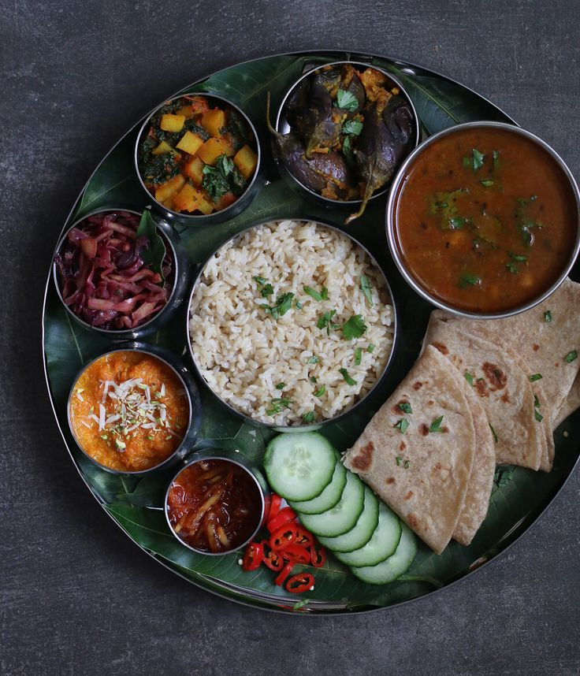
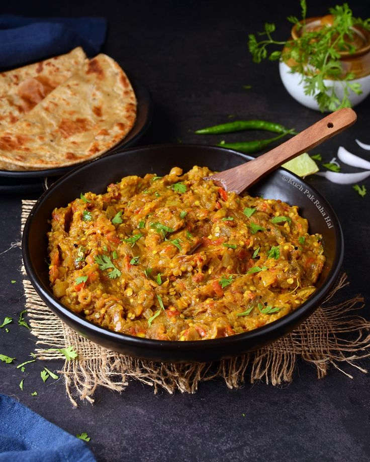
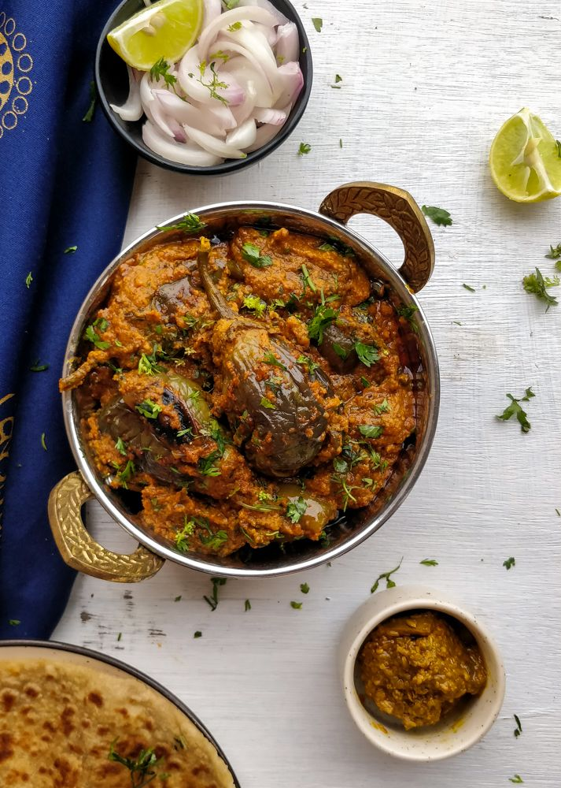

|
This website provides delicios recipies.Discover delicious recipes made with love and simple ingredients. Cook something amazing today – browse hundreds of tried-and-tested recipes. Your next favorite meal starts here. |
|
|
This website provides delicios recipies.Discover delicious recipes made with love and simple ingredients. Cook something amazing today – browse hundreds of tried-and-tested recipes. Your next favorite meal starts here. |
|  |
Gujarati Dishes❤Gujarati cuisine is one of the oldest and most diverse vegetarian food traditions in India. Originating from the western state of Gujarat, it reflects a rich blend of cultural, religious, and seasonal influences. Known for its unique balance of sweet, spicy, salty, and sour flavors, Gujarati food is both nourishing and flavorful, offering something for every palate. Gujarati food is a vibrant and flavorful cuisine from the state of Gujarat in western India. It’s known for its balance of sweet, salty, and spicy flavors in a single dish. Most dishes have a subtle sweetness, even savory ones. A pinch of sugar or jaggery is often added to vegetables and dal. A full Gujarati thali is a complete meal with roti, dal/kadhi, rice, vegetables, farsan (snacks), chutneys, pickles, and sweets — served all at once. Snacks like Dhokla, Khandvi, Patra, Handvo, and Fafda are iconic. Many are steamed or lightly fried, making them light and tasty. |
Ingrediants
|
In a pan, heat 2 tbsp of oil on medium flame. Add mustard seeds and let them splutter. Then add cumin seeds and a pinch of asafoetida.
Add green chili and ginger-garlic paste. Sauté for 30 seconds. If using onion, add now and sauté till translucent.
Add chopped or pureed tomatoes. Cook until they become soft and oil starts to separate (about 5–7 minutes).
Add turmeric, red chili powder, coriander-cumin powder, and salt. Mix well and cook for another 2 minutes.
Add jaggery and 1 cup of water. Let the curry simmer for 5 minutes. Adjust water based on how thick you want the gravy.
Once cooked, turn off the heat and add sev just before serving so it doesn’t get soggy. Stir gently.
Garnish with chopped fresh coriander. Serve hot with roti, bhakri, or paratha.
|  |
Ingrediants
|
Wash and dry the brinjal. Make small slits and insert 1–2 garlic cloves inside.
Roast it directly on an open flame (or in an oven) until the skin is charred and the inside is soft. Keep turning for even roasting.
Let it cool slightly. Peel off the skin and mash the pulp. Set aside.
Heat oil in a pan. Add mustard seeds, let them splutter. Then add cumin seeds and a pinch of asafoetida.
Add green chilies, garlic, and ginger. Sauté for a few seconds.
Add chopped onion and cook till golden brown.
Add tomatoes, turmeric, red chili powder, and salt. Cook until the tomatoes are soft and oil starts to separate.
Add the mashed brinjal into the cooked masala. Mix well.
Cook for 5–7 minutes on low flame, stirring occasionally.
Add chopped coriander and mix.
Serve hot with bajra rotla, bhakri, or phulka.
|  |
Ingrediants For Stuffing
Ingrediants For Main Dish
|
Wash and pat dry the brinjals.
Keep the stem intact and make two cross-slits at the base without cutting all the way through, so they remain whole.
Soak them in salted water for 5 minutes to reduce bitterness (optional).
In a bowl, mix: ground peanuts, sesame seeds, coconut, coriander-cumin powder, turmeric, red chili powder, ginger-garlic-green chili paste, jaggery, lemon juice, chopped coriander, salt, and 1 tbsp oil.
Mix to form a moist, crumbly masala. Adjust seasoning as needed.
Carefully stuff each slit brinjal with the prepared masala. Keep the remaining stuffing aside.
Heat 2–3 tbsp oil in a deep pan or kadhai.
Add mustard seeds. When they splutter, add cumin seeds and asafoetida.
Gently place the stuffed brinjals in the pan.
Sprinkle the leftover stuffing on top and around them.
Add 1/4 to 1/2 cup of water gently from the sides. Cover and cook on low heat for 20–25 minutes.
Stir occasionally and gently flip the brinjals to cook evenly, without breaking them.
Cook till the brinjals are soft and the masala is well blended.
Garnish with fresh coriander.
Serve hot with rotli, bajra rotla, thepla, or khichdi.